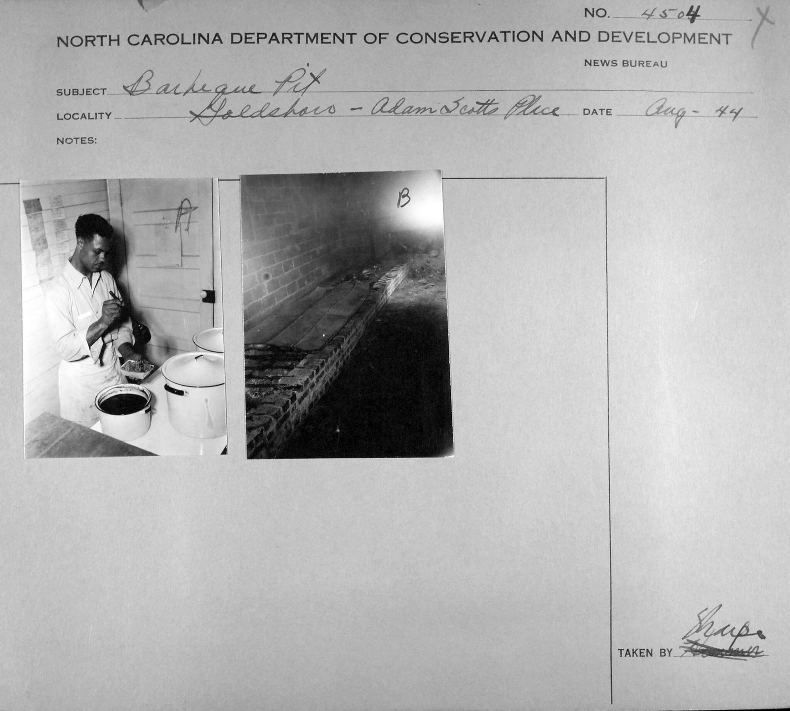

the pitbrick pit
also: Lexington pit · closed pit · pit house · the pits
In Lexington the pits are 'the pits', and the hand on them is 'firing the pits'.

The masonry pit of the Piedmont: a closed brick chamber with a rack for the shoulders and a chimney through the roof to carry off the smoke. Coals made from oak and hickory go in through the door and are spread on the floor under the meat; the door shuts and the shoulders cook nine to twelve hours at about 200 to 225 degrees. The Barbecue Center in Lexington describes its pit as a brick oven with three chambers, 'comparable to an oversized smoker', and Lexington Barbecue's roof carries a row of smoking stacks. The line of chimneys on a Lexington roof is how you know a wood pit from the road.
The story Cited · web-leisuregrouptravel-lexington
The closed pit is the restaurant's answer to the trench. Tradition holds — the Lexington style began under tents on the courthouse square in the 1910s and moved indoors as its cooks built permanent pits, and the pits they built were brick because brick holds heat and a chimney takes the smoke out of a dining room. NCpedia's entry records that few commercial pits today are dug in the ground, and that economy, fastidiousness and health rules keep most Piedmont pits from basting with the ketchup-and-vinegar sauce, which flares; it goes on at the table instead, hence its name, dip. The Barbecue Center has cooked in its pit since 1955 under the Conrad family, and Lexington Barbecue, founded in 1962, cooks 'with wood, not gas' over oak and hickory coals only; a new pit hand there trains for a year before working the pits alone, and the heat from the fires, one visitor wrote, is overwhelming as the coals are turned. The North Carolina Historic Barbecue Trail admits only pits that cook on grates over wood or charcoal, so its Piedmont stops — Stamey's in Greensboro, Short Sugar's in Reidsville, the Bar-B-Q Center, Red Bridges in Shelby — are brick pits by definition.
How it is done Cited · web-leisuregrouptravel-lexington
Oak and hickory logs burn to coals in a fireplace or burner at the end of the pit house; a crew member shovels the coals through the pit door and spreads them evenly under the shoulders — the round Lexington calls 'firing the pits' — then shuts the door. The shoulders sit on the rack, salted but not basted or marinated, for nine to twelve hours at 200 to 225 degrees; the Barbecue Center puts three hundred a week through its three chambers. The smoke leaves by the chimney. Finished shoulders come off to the block to be chopped, coarse chopped or sliced.
Today Cited · web-leisuregrouptravel-lexington
The brick pit is still the plant of the Lexington restaurants — Lexington Barbecue, the Barbecue Center — and of the Piedmont stops on the Historic Barbecue Trail. Lexington Barbecue's site says it cooks with wood, not gas.
Facts
| kind | pit |
|---|---|
| region | The North Carolina Piedmont, North Carolina |
| links | Lexington Barbecue — official site · Leisure Group Travel — Lexington's pits |
| confidence | high · updated 2026-09-15 |
Not to be confused with
- block pit — A brick pit is closed, with a door and a chimney, and cooks shoulders; a block pit is open, stacked from cinder blocks, and is sized to a split whole hog. Both are called 'the pit'.
- pig cooker — A brick pit is masonry and stays put; a pig cooker is steel on wheels.
Its kin
Who points back
Pictures
{kind=link}

Sources
- Lexington, North Carolina Barbecue is All About the Pork (Randy Mink) · link
- Lexington Barbecue — official site · link
- Lexington Barbecue · link
- The Art and Heritage of Lexington Barbecue in North Carolina (Laura Longwell, updated April 18, 2020) · link
- NCpedia — Barbecue (Encyclopedia of North Carolina) · link
- Lexington, North Carolina — Wikipedia · link
- Lexington Barbecue — Wikipedia · link
- Running on Full: The North Carolina Historic Barbecue Trail (Bryan Mims, January 29, 2016) · link
- Holy Smoke: The Big Book of North Carolina Barbecue — John Shelton Reed, Dale Volberg Reed, with William McKinney, 2008 · link
- Flickr Commons · link
- State Archives of North Carolina on Flickr Commons · link
- Department of Conservation and Development, Travel Information Division Photograph Collection · link
Where it came from: Cited a source we name · Harvested pulled from an open dataset · Tradition what the tradition says, hedged · Inference this project's reasoning · Field somebody stood there. This record as JSON.